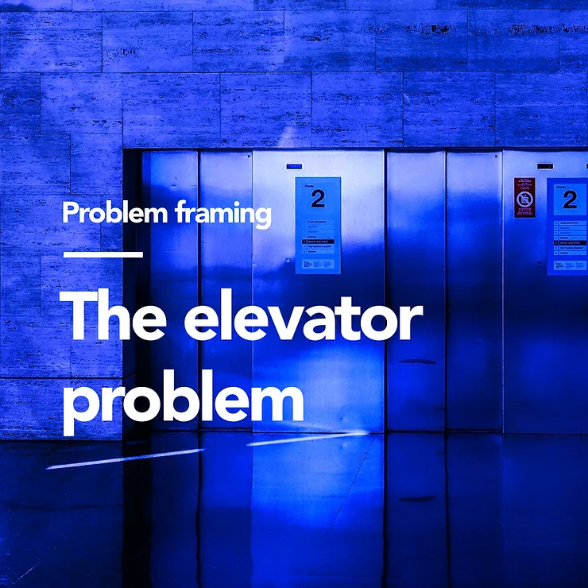
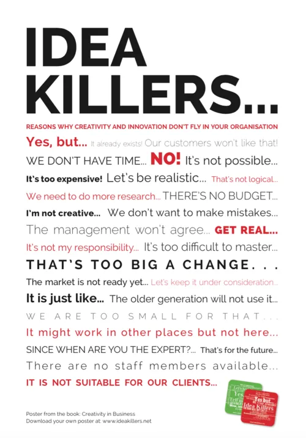

Ideation & Business Thinking
Get Ready for Take-Off!
Meet your Speaker
|
|
|
Topics
- Identifying the problem statement
- Brainstorming the solution
- Building your solution's business case
Drop your questions anytime
via
slido!
Code: #5187 876
Identifying the Problem Statement
Part 1
“The rigor with which a problem is defined is the most important factor in finding a good solution.”– Dwayne Spradline,
Are You Solving The Right Problem?
Understand the case study properly & break it down into parts
- Narrow down the scope (e.g. potential target groups/personas, core issues).
- List down all initial follow-up questions via the nested WHYs & HOWs method.
- Be pedantic. Scrutinise every wording and its meaning.
- Validate every assumption made. Ask for clarification from mentors/organiser.
Let's do an example!
“How might we help the young adults in developing financial literacy to grow their wealth at an early age? ” — RHB Get Your Hack On 2023
- What are the potential target groups?
- What does 'growing their wealth' mean?
- How early is 'early age'?
- What are factors that currently affects financial literacy development for said target group?
- If existing solutions already exist, what are some of the limitations?
How to get inspirations for potential problem statements?
1. Ask the Internet 🌐
- Google (or Bing 🙃).
- Research papers/articles.
- Previous solutions of other hackathons.
- ChatGPT? 😌
2. Ask others 👥
- Conduct polls, surveys & short interviews.
- Ask on social media e.g. Twitter, Instagram stories, Tik Tok.

3. Ask yourself 🙋🏻♂️
- Do you have any personal experience that could be used as basis for a problem statement?
The best strategy is to have your problem statement supported by both statistical (data-driven) & anecdotal (emotion-driven) evidence.
How to know you're solving the right problems?
|  |
Imagine you're an owner of an office
building & your tenants are
complaining about having to wait long
for the elevator. |
- Note that the initial problem framing is not wrong.
- Takeaway: Real-world issues are typically multicausal & can be addressed in many ways.
- Identifying a different aspect of the problem can spark solutions to problems that have seemed intractable.
- Expand the solution space by opening our minds to the frustrations/pains being felt.
The point of reframing is not to find the “real”
problem.
Rather, it's to see if there is
a
better one to solve.
- Is there a clear & pressing demand for a solution to this problem?
- Is this problem just temporary/occasional? Were there days when the problem didn't exist (positive exceptions)?
- Are existing solutions so insufficient that it warrants an urgent & better alternative?
- Are the pain points related to the problem relatable & easy to empathise?
- Ask your guts: Is the problem really worth solving?
“If I were given one hour to save the planet, I would spend 59 minutes defining the problem and one minute resolving it.”— Albert Einstein
Brainstorming the Solution
Part 2
Optimise how you conduct your ideation by deferring judgement
But first, why should we defer judgement?
Isn't it faster to generate & evaluate our ideas simultaneously?
Imagine this scenario:
- One of your team members volunteers an idea. 🙋🏻♂️
- Then, automatically & on cue, another member tells everyone why it won't work. 🤨
- The idea is withdrawn & never captured. 🙅🏻♂️
- Even worse, a long argument ensues back & forth as to the merits of the idea. 🤬
- Eventually, everyone becomes frustrated. 😠
- No solution idea gets shortlisted in the end. 😓
- Avoid the tendency to think of a possibility & then find fault with it almost immediately.
- Remember: All ideas are innocent until proven guilty! Shoot them down later, just not now.
- Creativity demands both divergent & convergent thinking, but not at the same time.
- Ideas should be allowed to be expressed as is, without criticism, censure or requests for detail*. *unless the ways they are expressed are simply not understood.
Beware of idea killers

TLDR:
Would your drive your car with
one foot on the gas
&
another on the brake
simultaneously?
Okay, so how to defer judgement?
What do these authors have in common?
 Maya Angelou
Maya Angelou
|
 Ernest Hemingway
Ernest Hemingway
|
 Joan Didion
Joan Didion
|
- Maya Angelou would write in the morning & edit in the afternoon.
- Ernest Hemingway did the same.
- Didion says that she writes for as long as she can in the morning. Then in the late afternoon, she'll have a drink & goes over what she wrote earlier in the day.
Employ the 50/50 rule
- Conduct two different brainstorming sessions separately.
- The first session → Right brain: Generate & document the ideas. Share thoughts & possibilities.
- The second session → Left brain: Compare. Scrutinise. Weigh. Evaluate. Sort. Choose.
-
Your team members will feel more at
ease
→
↑ Productivity, ↑ Creativity, ↑ Solution.
“The imaginative mind must be given free rein to run without the constraints of the saddle, stirrup and harness of the judicial mind — else you put yourself & your participants in danger of brainstorm asphyxiation.”— Idea Champions
Novel ≠ Good.
- A winning solution doesn't have to be entirely new. This is a huge & common misconception.
- It's fine if your solution builds/improves on top of existing ones. That's called innovation.
- Regardless, identify & assess your solution's main differentiator/WOW factor/USP.
Validate your idea
- Does the solution effectively solve the problem statement(s)? What pain points are your product relieving? Don't be syok sendiri!
- What is so unique about your solution that stops anyone from using a similar alternative? How can it compete in the market? (Uniqueness)
- Is there a steep learning curve and high cognitive effort for your target users to operate your solution?
- Is your solution merely a low-hanging fruit? e.g. UI/UX improvements
- Can the MVP of this solution be implemented within the hackathon timeframe? (Feasibility)
Let's try out an exercise!
|
Sample Case Study |
Padlet |
“Ultimately, ideation is a probabilistic game. You want to maximize the likelihood that you'll get a suitable idea.”— Clark Quinn
5 minutes break
Building your solution's business case
Part 3
Ensure stickiness of your solution

1. Triggers
- Actuator of behaviour. Akin to spark plug.
- External trigger = notifications (email/push/messages), invitations.
- Internal trigger = user's emotions, thoughts & and memory associations (positive & negative).
- Internal > External. End goal = Switch from external to internal triggers over time (habit).
2. Actions
- What is the minimum intended action you want from the user when engaging with your product?
- Done in anticipation of a reward.
- Requires 2 things: Motivation & Ability.
- Motivation = Level of desire to take action.
- Ability = Degree of hardship to take action.

3. Variable Rewards
- Ability to satisfy users' needs while leaving them wanting to re-engage with the product.
- Tribe: Social rewards fueled by connectedness with other people e.g. validation, acceptance.
- Hunt: Material rewards e.g. resources & information.
- Self: Intrinsic rewards of mastery, competence & completion e.g. personal gratification.
4. Investments
- What users need to 'pay' to ensure the loop continues & they keep using the product.
- Set users up for the next trigger, storing value & creating preference.
- Comes in the form of time, data, effort, subscription money, or social capital.
- e.g. Creating a loyalty program where users can collect points.

“To change behavior, products must ensure the user feels in control. People must want to use the service, not feel they have to.”— Nir Eyal, Hooked: How to Build Habit-Forming Products
Develop your solution's business model
Determine your revenue sources

Estimate your Market Size
- Known as Total Addressable Market (TAM)
- 3 methods:


Provide product comparison metrics
- Give a fair assessment of your competitors.

Outline your key success metrics

- Does your solution have a viable revenue generation source and a route to commercialisation?
- Is the solution the first-to-market? Will the solution become a key differentiator to the organisation?
Read about my most recent hackathon journey at my blog!
Thank you!